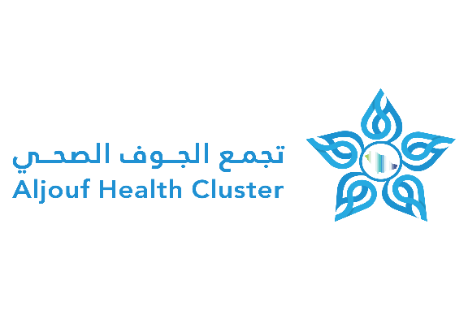

مفتاح Google Cloud TTS
أدخل مفتاح الـ API الخاص بـ Google Cloud لتشغيل الصوت باللهجة السعودية (صوت Sadachbia)
بدء العرض التقديمي
الدخول بدون صوت (للقراءة فقط)

نظام متابعة جودة الأداء والامتثال - المراجعة النهائية
يتحدث الان...
السابق
1 / X
التالي